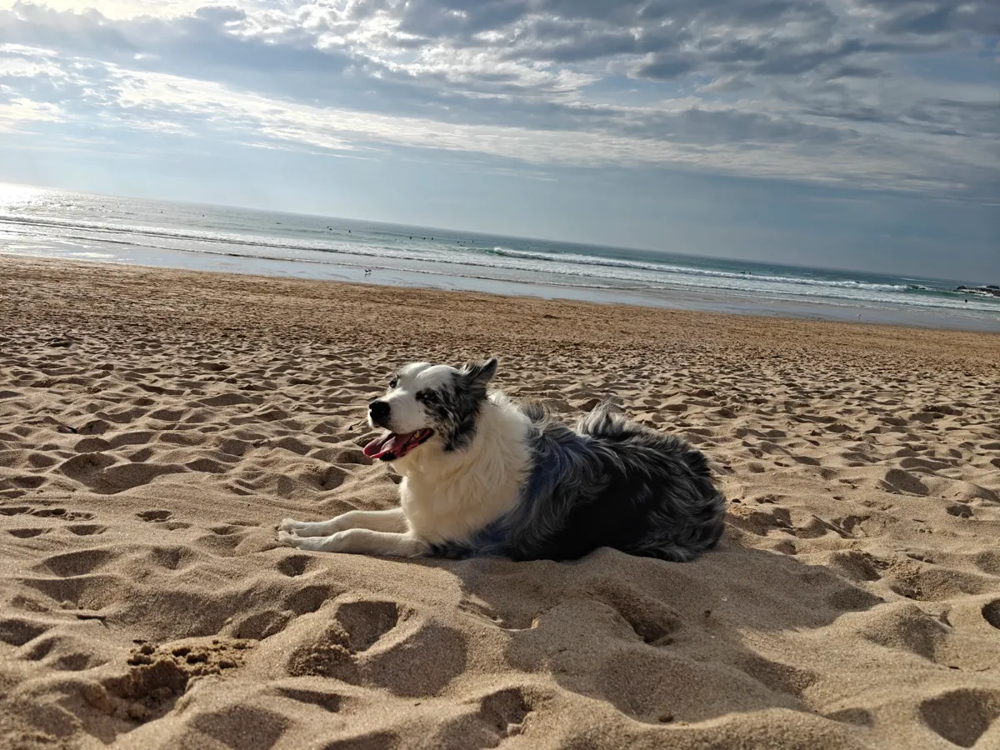

Visiting Newquay With Your Dog: Everything You Need to Know

Newquay is one of the best places in the UK for a dog-friendly holiday. With miles of stunning coastline, dozens of welcoming pubs and restaurants, and a relaxed attitude towards dogs that you only really find in Cornwall, it is a destination where your dog can be part of the adventure rather than an afterthought.
We work with visiting dogs and their owners every week, so we know what makes a great dog-friendly trip to Newquay. Here is everything you need to plan yours.
Getting Here With Your Dog
By car is the easiest option for travelling with a dog. Newquay is reached via the A30 and then the A392, and the journey from the M5 at Exeter takes around two hours. Most holiday accommodation has parking, and having a car makes it easy to explore the wider area including beaches further along the coast.
By train, Great Western Railway operates a branch line service to Newquay station from Par, connecting with the main line from London Paddington, Bristol and Exeter. Dogs travel free on GWR services and are welcome on all trains. The Newquay branch line is one of the most scenic railway journeys in Cornwall, winding through valleys and over viaducts. Newquay station is centrally located, a short walk from the town centre and beaches.
By air, Newquay Cornwall Airport is just five miles from the town centre and has regular flights from London, Manchester, Edinburgh and other UK cities. Dogs are not permitted in the cabin on most domestic flights, so this is generally only practical if someone else is driving your dog down separately.
Dog-Friendly Accommodation
Newquay has a huge range of dog-friendly accommodation. The majority of holiday cottages and holiday lets accept dogs, and booking platforms like Sykes Holiday Cottages and Airbnb both have dog-friendly filters to make searching easier. Many properties are specifically set up for dogs, with enclosed gardens, hard floors and dog-washing facilities.
Be aware that most dog-friendly properties charge a dog supplement, typically between £25 and £50 per dog per stay. Some limit the number of dogs to one or two per property. Always check the specific terms before booking, as some properties restrict dogs from bedrooms or upstairs areas.
Several hotels in Newquay also welcome dogs, including The Headland Hotel on Fistral and the Watergate Bay Hotel. These tend to have designated dog-friendly rooms, so booking early is essential during peak season.
Our advice: book accommodation that is specifically marketed as dog-friendly rather than one that simply allows them. Properties set up for dogs will have the right flooring, outdoor space and a relaxed attitude that makes your stay much more enjoyable.
Beaches
Newquay has over a dozen beaches within easy reach, and most of them welcome dogs for at least part of the year. The key thing to know is that seasonal restrictions apply between Easter and 30 September on many beaches, typically banning dogs between 10:00 and 18:00. Outside of these hours, and throughout the winter months, dogs can enjoy the full stretch of nearly every beach.
Some beaches, including Porth Beach (northern end), Crantock Beach and Holywell Bay, are dog-friendly year-round, making them the best options for summer daytime visits.
For our detailed beach-by-beach guide with seasonal rules, the best spots and insider tips, read our complete guide to dog-friendly beaches in Newquay.
Eating Out
Newquay has an excellent selection of dog-friendly restaurants, pubs and cafes. From clifftop fine dining at The Lewinnick Lodge to proper fish and chips at Flounders, you can eat well without leaving your dog behind. Most places welcome dogs in bar areas and on outdoor terraces, and many provide water bowls.
For our full list of recommendations and tips on dining out with your dog, see our guide to dog-friendly restaurants in Newquay.
Things to Do With Your Dog
Beyond the beaches, Newquay and the surrounding area offer plenty of activities and outings you can enjoy with your dog.
The South West Coast Path runs right through Newquay and offers some of the most dramatic clifftop walking in the country. The section from Newquay to Crantock via the Gannel Estuary is particularly beautiful, as is the walk north from Watergate Bay towards Mawgan Porth. Dogs should be kept on leads on sections near cliff edges and where livestock is grazing, but otherwise can enjoy the freedom of the open path. The views are extraordinary at any time of year.
Bodmin Moor is about 40 minutes from Newquay by car and offers wide-open moorland walking that dogs absolutely love. Rough Tor and Brown Willy, Cornwall's highest points, are accessible walks with panoramic views. Dogs must be on leads near livestock, which graze freely on the moor, but there is plenty of open space away from animals.
Trerice, a National Trust Elizabethan manor house near Newquay, has beautiful grounds and gardens that are dog-friendly on leads. Dogs are not permitted inside the house itself, but the gardens, orchard and surrounding estate make for a pleasant afternoon out. The National Trust tea room at Trerice is also dog-friendly.
Lappa Valley Steam Railway, just outside Newquay near St Newlyn East, is a family attraction where dogs are welcome. You can ride the miniature steam trains through the Cornish countryside, explore the boating lake and enjoy the woodland walks. Dogs must be on leads but are welcome throughout the site. It is a fun, slightly different day out that works well with dogs.
Newquay Zoo is one of the town's most popular attractions, but dogs are not allowed. If visiting the zoo is on your list, you will need to arrange care for your dog — which is where our pet sitting service comes in handy.
When You Need an Evening Off
As much as you love your dog, there are times during a holiday when you want to do something that is not dog-friendly. Perhaps it is a special dinner at Rick Stein's Fistral, a visit to Newquay Zoo with the children, or simply an evening at the cinema. You should not have to miss out on these experiences just because you are travelling with a dog.
That is where we come in. Our evening pet sitting service is designed specifically for holiday visitors. We come to your accommodation — whether it is a holiday cottage, hotel room or Airbnb — and look after your dog while you enjoy your evening. Your dog stays in familiar surroundings, and you get to relax knowing they are in safe, experienced hands.
Our sitters are experienced with all breeds and temperaments, fully insured and DBS-checked. Evening pet sitting starts from £20 per hour, and we recommend booking in advance during peak season as availability fills up quickly.
Useful Contacts
It is always sensible to know where to find help if your dog needs it while you are on holiday.
- Rosemullion Veterinary Practice, Newquay — the local veterinary surgery in Newquay. They offer routine and emergency appointments during opening hours. Check their website for current times and to register as a temporary patient.
- Out-of-hours vet — Rosemullion provides details of the nearest out-of-hours emergency vet service on their answerphone and website. Save the number in your phone before you need it.
- Newquay Sundown Walks — that is us. If you need dog walking, weekend daycare or pet sitting during your stay, get in touch. Call 07743 019 202 or email hello@newquaysundownwalks.co.uk.
Planning Your Trip? Book Our Pet Sitting in Advance
Availability fills up quickly during school holidays and summer. Secure your evening pet sitting before you arrive so you can enjoy your holiday to the full.
Book via WhatsApp